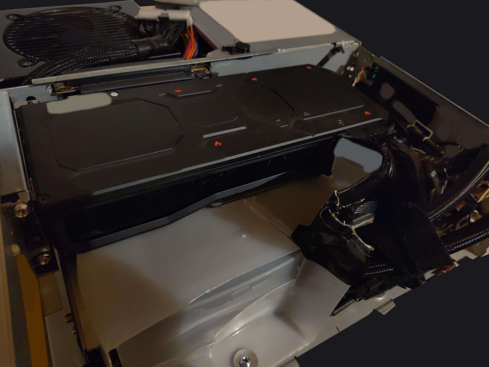

I have collected a few old computers and "retro" consoles over the years. Recently I found a Compaq Prolinea 575e at my local recycling center. It is nothing special, just an old x86 computer that was not selling very well at the time. It looked all right from the outside, so I talked to the people there and took it home. Inside, the hardware was... well... some capacitors were not feeling well and puked their fluids all over the place. In short, the hardware was completely f*cked. But the case was still in ok condition and I decided to clean it up as much as possible and, if it looked decent after that, I would make it my new PC case.
This is not going to be a HowTO or something. I will post some drawings of what I had to do to make the case usable and some pictures and the hardware I used, but to replicate this you will have to make all the measurements yourself because it is such a compact and optimised build and it cannot be made generic to fit any hardware.
After removing the dead hardware and cleaning everything, it was time to plan. I was able to fit the following hardware:
Main Hardware:
Other Hardware:
You will need at least the following tools:
I had to drill about 13 small holes to mount the small fans. The other half of the holes for the fans were already drilled in the case from the factory. There are 5 fans in the lower front and they draw air in from the air holes in the front. One is also above the leftmost one (there is a hole in the front panel that allows air to come to it from below) and one fan in the rear left of the case. There is only enough room for one next to the mainboard. The mainboard is fitted as far to the right as the mainboard's back panel will allow. To mount the mainboard, I had to drill 4 holes in the base plate and remove all the metal parts that protrude from the back panel. The hole connecting the left and right chambers had to be widened and everything vertical to the top bar (The horizontal part could stay) had to be removed to fit the PCIE riser connector. For many PSUs, the right side of the CD and Flopy-Drive ?tray? has to be cut off, because at least one connector is too close to it. For the PSU itself, it was necessary to cut the plastic and metal to allow airflow and access to the connectors. The UHD Blu-Ray drive ;) is mounted in the front with the help of two metal plates, the floppy drive is replaced with a USB-C adapter and the old plastic is cut off so that the left and right sides are closed of. Finally, the CPU cooler was chosen because of the flexible tube exits on the block, and the pump is on the tube and only on one side (the right tube just goes through a hole and is movable). I had to cut a large and very carefully measured hole in the base plate and mounted the cooler over it, with the fan to draw air through the cooler. All the fans are intake fans, except for the PSU-Fan and the fan next to the mainboard. In short, the thermal design is designed for high pressure. The hot air SHOULD be pushed out by all the incoming cool air (and the PSU and the one fan at the back will direct the air). The GPU is mounted using the existing PCIE bracket in the back and a small metal bracket holds the GPU tightly to one of the original HDD brackets. It is a good idea to add a counter-screw to the back of the used screw hole in case the nut ever comes loose from vibration and falls off. The PCIE riser goes under the GPU and to the mainboard, and every inch of the 30cm was needed. All the fans (except for the PSU, mainboard SDD fan, pump and radiator fans as they all have their own headers) were connected to the single FAN header on the mainboard with many Y-splitters that came with the fans. All 8 mini fans should never overpower the fan header from my calculations, but it's still a stretch LOL. The font panel of the UHD Blu-Ray drive ;) and the USB-C floppy replacement were sanded and then sprayed (not recommended because of the "cleanup" work on the Blu-Ray drive to get it to open and close nicely again). The power switch can be opened and a small black peace at the top can be cut off to make it into a button. Finally, all case switches and LED's (HDD/POWER-LED and the POWER-SWITCH) were soldered to the mainboard-connectors and then connected to the mainboard.
That was a lot of text, but that was it. It is VERY tight. And I mean VERY VERY tight. I had to push a lot of cables down and under the GPU bracket. I still cannot believe that the GPU fans are actually spinning xD.
Temperature? Fine. The case does get hot, but the GPU stays at 65-70 at IDEL, 90-95 at 100% load (not much worse than in my previous case, which was a good case with good and well-functioning airflow). The CPU is definitely a lot hotter than before. I used a 360mm radiator before this case and it cooled it much better and kept the CPU above the 95 degree mark for longer. Why 95 degrees? AMD designed this generation of CPUs to use as much power and boost as possible until they reach 95 degrees and then try to stay there. It works, but it is really weird. I used my usual settings for better efficiency:
Link to a Reddit post on how to find it is in the sources section. Actually hard to find on the web (Keeps the general temperature under control without sacrificing performance).
UPDATE - 2024.04.01: One expected problem is that the fans only react to the CPU, and that is bad in a case where airflow is SO important! What I did was to set all the fan and pump settings in the BIOS to MAX. This makes sure that everything has enough air during downtime. And in the OS (Linux of course ;)) I had to install the "NCT6687D Kernel module" from "Fred78290". This is needed because the chipset used by MSI is not fully supported by the Linux kernel by default. The easiest way is to install it as a DKMS package, add it to "/etc/modules", get systemd to load it at boot time with the "modules-load.d" module, and enable the GPU parameter with the "amdgpu.pfeaturemask=0xffffffff" kernel parameter in the boot loader. Now the sensor is detected, but software is needed to control the fans. There are tools such as CoolerControl or CoreCTL that can do this. The best way is to create a custom sensor that uses the current max value of both GPU and CPU and then react to it with a fan curve. As the computer cools down, a delayed fan slow-down is also a good idea to help push the hot air out. A delay of about 5 to 7 seconds each 3°C should be slow enough (I've linked everthing useful I found in the Sources section).
UPDATE - 2024.05.23: The AMD Radeon RX 7900XT/XTX fan and overclocking controls are still not what they should be. There seems to be an architectural change in how the settings are applied in the driver. The only tool I could find that mostly works with them was Lact by ilya-zlobintsev.
That was about it. The computer works well, is a bit louder than other cases but not too bad. Lets see how long it works like soooo many other sleeper builds out there.
UPDATE - 2024.06.15: I added metal feet to the case and added an air channel which improved the air flow by a good amount. The gpu should now push most of its air out of the case. At the middle wall of the case I also added some plastic to make the hole less air flow friendly. If you are wondering what I am using for this: It is an old plastic box, cut into pieces as needed lol.
{kind=link}